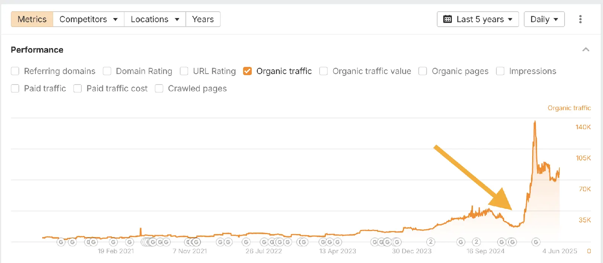
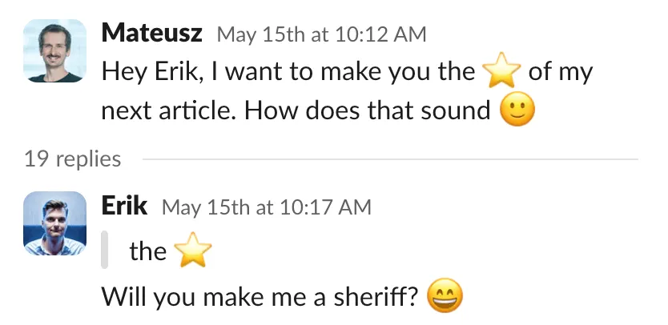

Definition
Mika Visibility is an educational and diagnostic product for B2B websites. This note is about localization search visibility on a multilingual site: one company, parallel language URLs, and the same product facts on each URL. GEO here means generative engine optimization, not geographic targeting. A high health finding never becomes an automatic growth finding.
Short answer
Publish one set of facts, then attach the language URLs. Take the servo motor: sizing follows the published torque, not a translated adjective. A page about localization search visibility that translates the headline and edits the specification gives answer systems two entities. Mika Visibility checks whether the pages agree. It does not promise inclusion in any answer product.

Fields that must say the same thing
Compare six fields before you compare traffic. Company name. Product name, including the model code for servo motor. Specifications, especially rated torque and inertia. Applications, named as axis positioning rather than a vague sector word. Claims, including the condition in “sizing follows the published torque, not a translated adjective”. Question coverage: the buyer question is either answered, partial, or uncovered in that language.
English stays at the root. Chinese stays under /zh/. Do not add an /en/ prefix. Language labels on the homepage illustration include EN, 中文, Español, العربية, Русский, and Deutsch. Those labels are a picture of the idea, not a claim that every label already has a deep market site. Each language you do publish still carries independent SEO Health, SEO Growth, GEO Health, and GEO Growth.
The issue on the page
Search visibility is per language
International search visibility means a crawler can fetch, index, and understand each language version, and a buyer in that language can find a page that answers a real question. A healthy English crawl does not create Chinese topic coverage. SEO Health and SEO Growth stay separate inside every language. Health asks whether the live URLs can be crawled and understood. Growth asks which questions and markets are still unoccupied.
On-page basics still apply after translation. The title, the heading, and the canonical should name the same servo motor the body specifies. A translated title that upgrades sizing follows the published torque, not a translated adjective into an absolute promise is a new claim, not a localization. The datasheet link has to work on that language path. A broken evidence link wastes the crawl and the buyer’s trust.
Internal links should stay inside the language the visitor is reading. A Chinese paragraph that only points at English product URLs makes the Chinese version dependent on another language for the actual specification. That is a discovery problem and an answerability problem at the same time. Orphan translations with no in-language links are easy to miss in a sitemap and hard to use.
Signals that travel with the page
A glossary locks the strings that must not drift: company name, product name, model code, standard names, and the words for axis positioning. Translators can still write natural sentences around those strings. The audit compares the published pages, not the glossary file sitting in a drive.
Answer surfaces quote short passages. If the English passage states a condition and the Chinese passage omits it, a system that reads both can drop the condition. Write the direct answer in each language as a full sentence that includes the constraint. Do not expect the system to “know” which language is safer.
What to check
- Open the English and Chinese URLs for servo motor side by side and read rated torque and inertia aloud. If one side is shorter, the fields do not match.
- Confirm reciprocal hreflang among the live canonicals, including a self-reference, with x-default on the English URL.
- Follow the in-language internal links from the hub to the product page so the alternate is not an orphan.
- Read the direct answer to “Which servo covers this inertia?” and check that the condition in “sizing follows the published torque, not a translated adjective” survived translation.
What this does not claim
This page does not guarantee search rankings, AI answer citations, or inclusion in AI Overviews, ChatGPT, Gemini, or any other answer product. Correct hreflang, a tidy /zh/ folder, and matching facts about servo motor make the site easier to understand. They are not a placement promise. Homepage sample counters are illustrative interface, not results.
A practical example
Example, not a customer story. A manufacturer publishes servo motor in English and opens /zh/ by translating the menu. The Chinese page shortens rated torque and inertia and drops the condition in “sizing follows the published torque, not a translated adjective”. A buyer asking “Which servo covers this inertia?” finds a fluent page and the wrong limit. Diagnosis separates the issues: GEO Health for the entity drift, SEO Growth for the thin market page, GEO Growth for the unanswered local question. The blueprint restores the specification, writes the direct answer on the product URL, and re-audits. Nothing in that loop promises a ranking.

FAQ
What should we do about localization search visibility?
Publish one set of facts, then attach the language URLs. Take the servo motor: sizing follows the published torque, not a translated adjective. A page about localization search visibility that translates the headline and edits the specification gives answer systems two entities. Mika Visibility checks whether the pages agree. It does not promise inclusion in any answer product.
Which facts about servo motor must match?
Compare six fields before you compare traffic. Company name. Product name, including the model code for servo motor. Specifications, especially rated torque and inertia. Applications, named as axis positioning rather than a vague sector word. Claims, including the condition in “sizing follows the published torque, not a translated adjective”. Question coverage: the buyer question is either answered, partial, or uncovered in that language.
Does this guarantee rankings or AI citations?
This page does not guarantee search rankings, AI answer citations, or inclusion in AI Overviews, ChatGPT, Gemini, or any other answer product. Correct hreflang, a tidy /zh/ folder, and matching facts about servo motor make the site easier to understand. They are not a placement promise. Homepage sample counters are illustrative interface, not results.
Next step
Run a structured SEO + GEO audit to see health findings, growth gaps, and a blueprint you can act on.
Clearer entities, answers, evidence, and context make pages easier to understand and reference. Results in any answer product are not guaranteed.